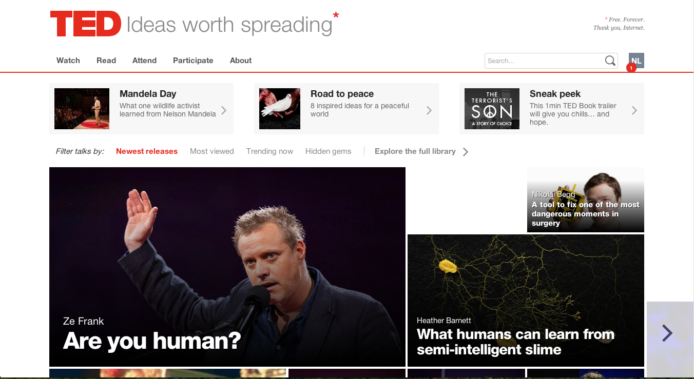
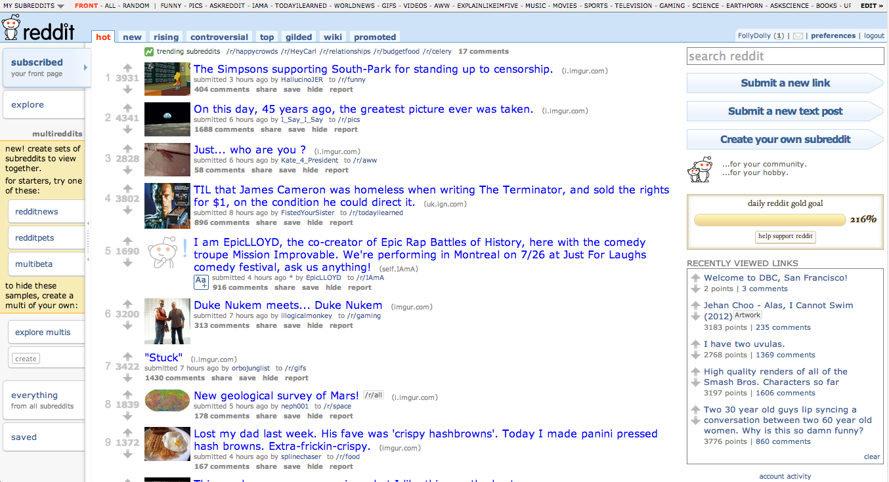
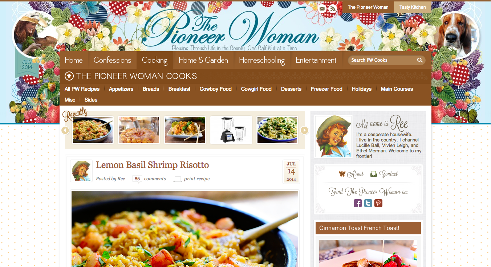

Today, I chose three websites to study in closer detail. You may have heard of them (or maybe not): TedTalks, Reddit, and Pioneer Woman. The first two, I imagine, are household names. The last one is one of my personal favorite food blogs, but we will talk about that later.
TED stands for Technology, Entertainment, and Design. The website is a series of speakers and presenters who talk about the latest ideas and innovation in thinking about all three of these topics. I always find a video that is inspiring to watch and ones that I love to share with others.
Ted Talks recently got a site redesign, so it is a lot more user-friendly and easy on the eyes. For example, when you go to the front page, the biggest thing you see first is an image that takes up almost the entire width of the page are pictures of videos. The largest video is obviously the one they want to highlight, but there are other tiles next to it, so if you see something you like more, you can just click it, and within seconds, you are watching a video you are interested in.
I can tell they paid attention to detail. Ok, so I was reading about their redesign process, so that's how I know. The images on the front page is not a random picture of the videos, it's always an image that was curated carefully from the thousands of picture frames that makes up the video. So it's always something that will catch your eye, not just a tiny person on stage.
I like the new look. It's cleaner, more streamlined, and you can easily find your way around. I used to only see TED links from other websites, because I never enjoyed browsing through their website. The images were tiny, and it was just never really appealing to me to have to sift through lists and lists of talks. But now, it's a stress-free experience. In fact, it's a pleasant experience. I feel like a kid in a candy store, and it's full of eye and brain candy. Will visit again in the near future. *Thumbs up*
Reddit is entertainment. It is a social experiment. It is a forum. It is silly. It has garbage. It has cats. So in otherwords, this has everything to suck you in and waste your entire day. You have been warned.
So the idea of the website is very simple. People post links or pictures or questions or thoughts. Other people upvote them or downvote them depending on if they like it. The posts with the most upvotes float to the top, so the front page is basically the best posts of the day/week. I'm not sure how they calculate everything. But it works! I spend way too much time on Reddit.
In terms of design, I would say, the focus is still on the list of links, but the sides are pretty busy. The top just looks busy, because there's about 20 links up there, but it seems to work. I think that there are still a lot of nooks and crannies that I haven't explored. For example, there are subreddits that people create, and they can be about any kind of random topic they so desire. But I stick to the main page mostly.
In terms of navigation, I think that it's pretty easy to get around. Once you open a topic, the comments page is right there, which is my favorite part! The comments are very organized compared to most forums I have seen. Collapsible threads, top comments, and links to user pages make it very easy to open and close conversations or digressions, see the best comments, and add your own.
The website doesn't try to sell anything. They do have what's called "Reddit Gold" but it's a voluntary donation in the form of a gift to another redditor, almost like a charity or a trophy for a good post. I think it is very carefully moderated, so the community generally will downvote any inappropriate behavior and upvote the good stuff.
Pioneer Woman was introduced to me as a cooking blog. Her "Everything Cookies" are amazing, the photos are very well done, and her writing is very engaging. She has a way of making you feel like you're her best friend.
It actually took me a couple visits before I realized she did other things besides cooking. She does photography, gardens, and even wrote a book. So yes, it sounds like she's the quintessential homemaker, but basically I idolize her. Aside from living in Texas and marrying a cowboy, I see many similarities...
Oops, I digress. So the website has a lot of facets to it, but I want to focus mainly on the Cooking blog. It's very fun to look at, because she takes super appetizing photos of her food and preparation. She also organizes the types of food in a navigation bar at the top of the page. So there's really no way you can get lost, other than getting lost reading recipe after recipe.
As a visual person, I think the design of her website is definitely catering to her audience, and it has that homey, cozy, nostalgic, rustic, delicious feeling.
I'm sure she is trying to sell something from this website, but I'm not sure what it is, because I only go there to find her recipes, and whatever I make, it always come out amazing. I know she has some books out. Ah, so I think she is basically just building her "brand," and now that she has a large audience/fan base, she can go and sell her books (or maybe even videos?). She probably has a show by now right? Anyway, now I'm kind of hungry. Until next blog!